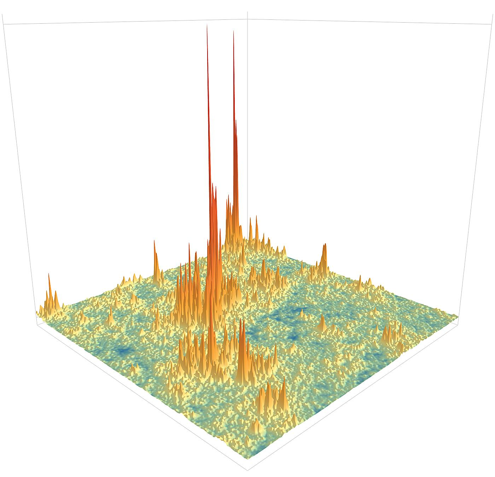
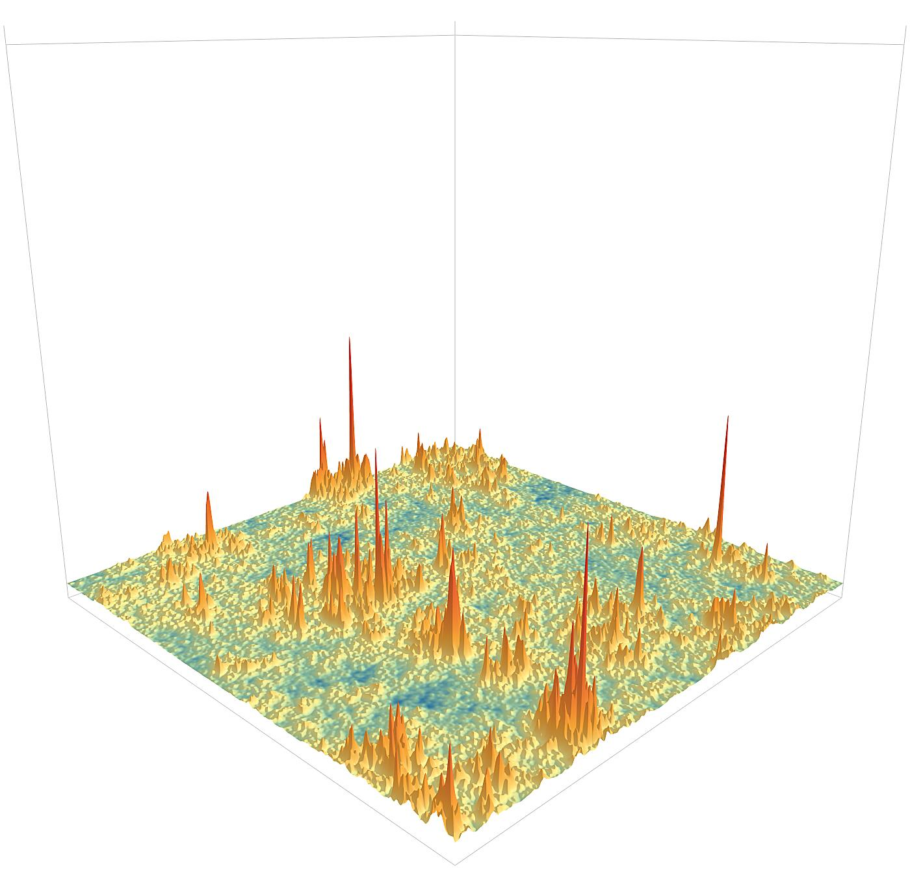
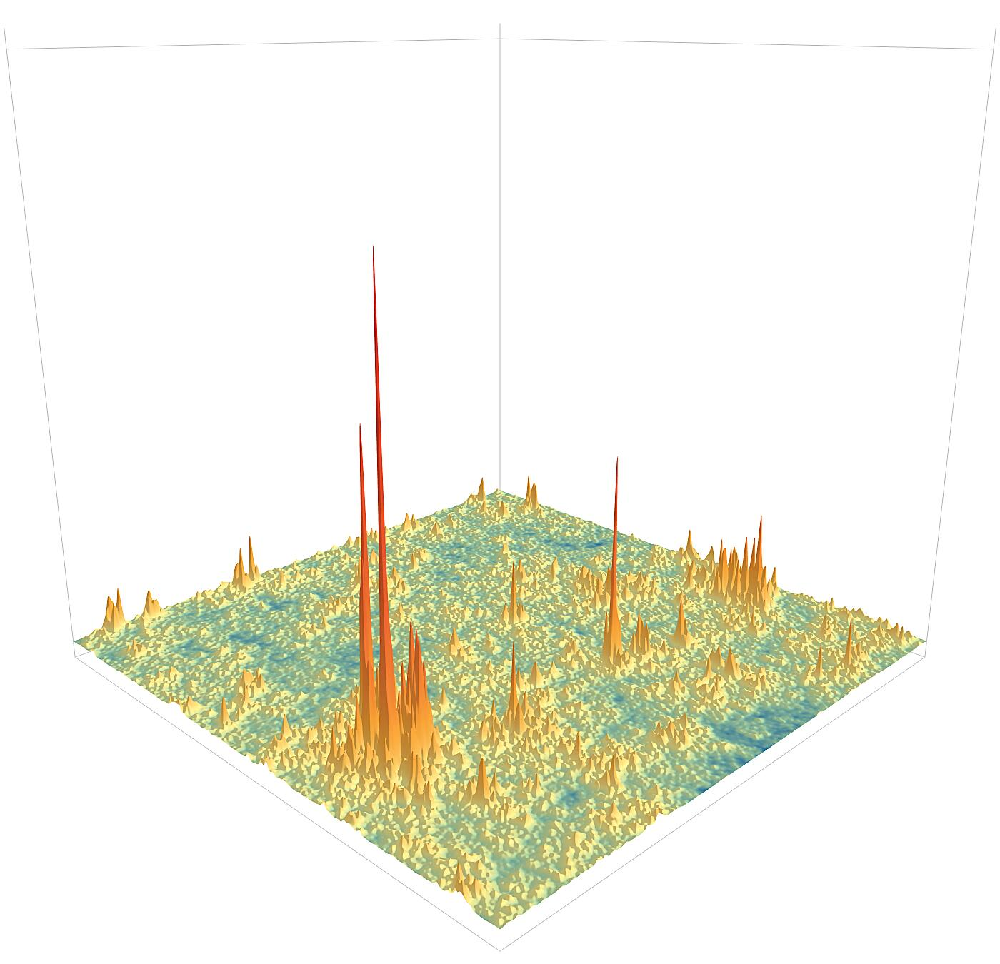
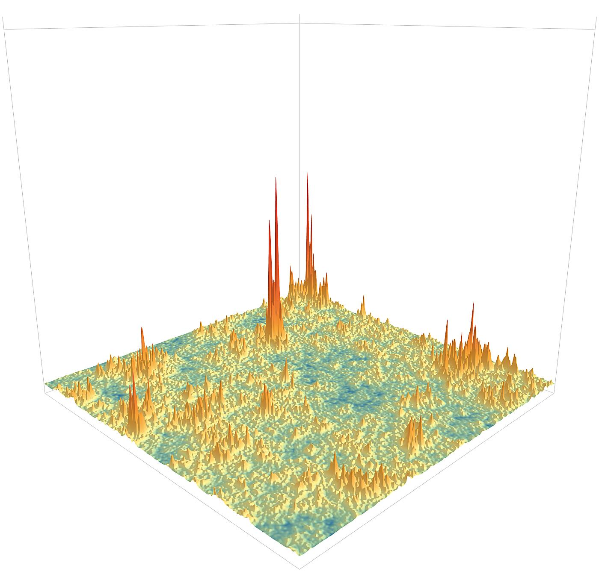
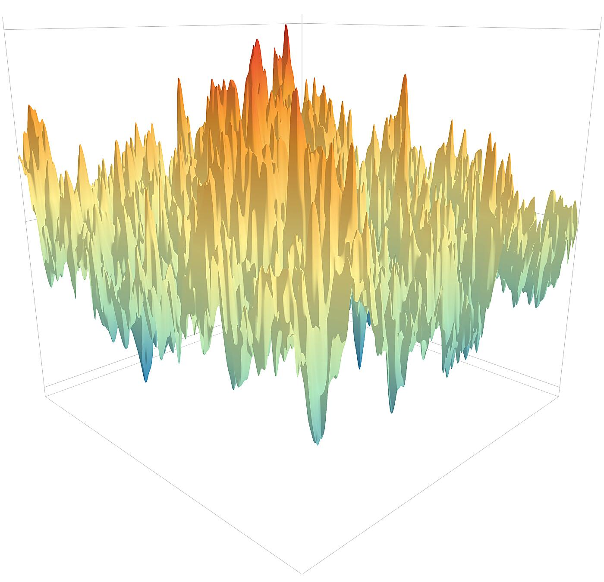
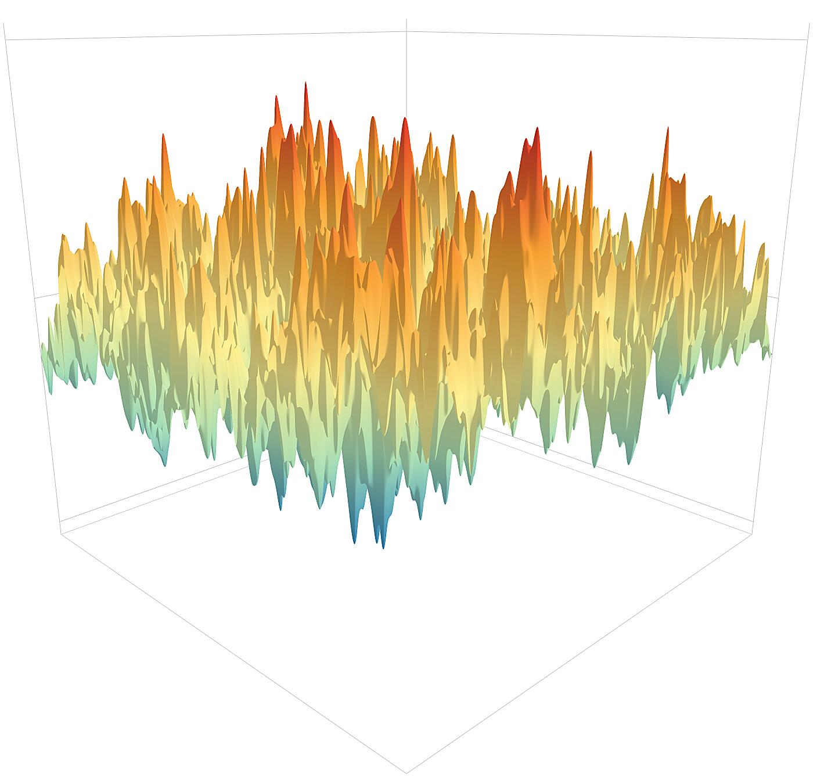
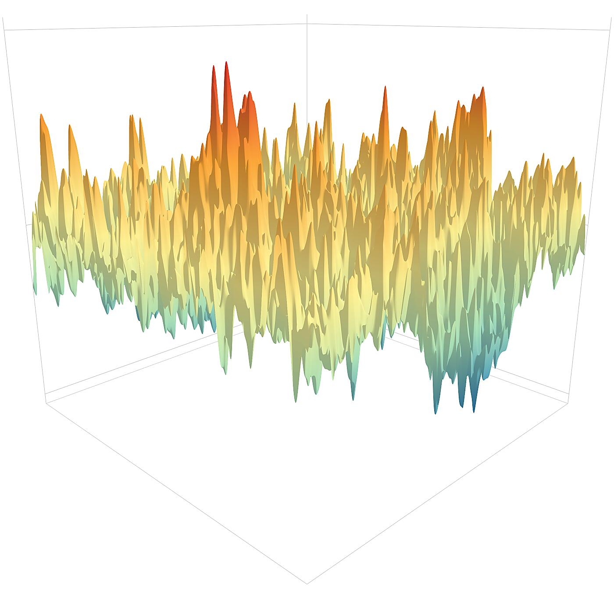
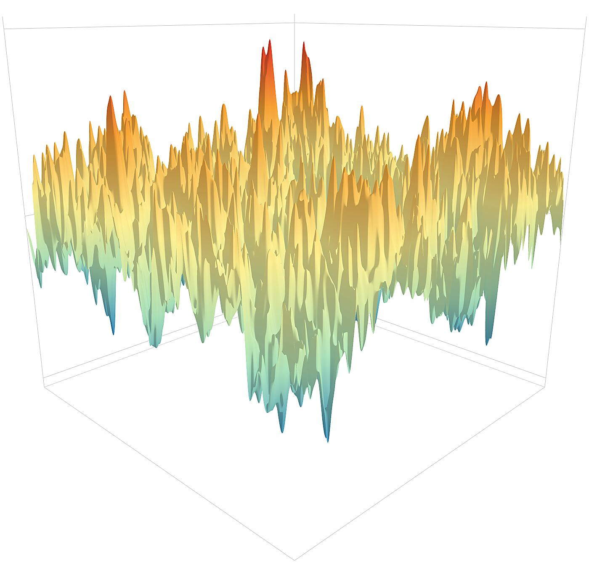

Stochastic Heat Flow








KPZ process








The images below show four samples of the SHF and their corresponding KPZ fields at the initial zoom, on a tilted square of macroscopic size 10×10. For each field, all four samples share the same vertical scale, approximately 0 to 184 for SHF and −5 to +5 for KPZ.







